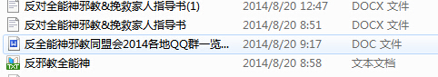
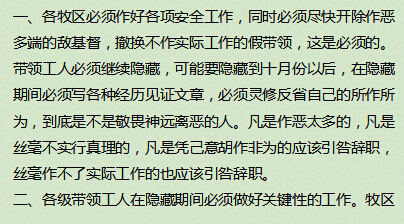
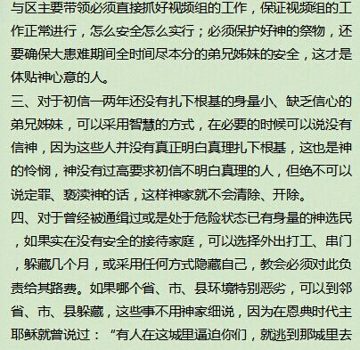
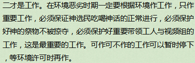

Conversation with 81184027 at Sat 23 Aug 2014 12:33:44 PM CST on 154115835 (webqq)
(12:33:58 PM) 光: 刚才机子卡了
(12:37:19 PM) 箭客: 哦
(12:34:11 PM) 光: 那么可以说你是联盟的失败案例了
(12:37:36 PM) 箭客: 怎么说
(12:34:31 PM) 光: 我看你用的方法就是联盟的那几招
(12:34:35 PM) 光: 开除策略
(12:38:03 PM) 箭客: 是我个人行为
(12:35:01 PM) 光: 好吧
(12:38:27 PM) 箭客: 那个时候我还没有接触网上的什么所谓联盟
(12:38:33 PM) 箭客: 我说的是真话
(12:35:29 PM) 光: 嗯
(12:35:31 PM) 光: 没关系
(12:35:39 PM) 光: 这种方式我这边不赞成的
(12:36:02 PM) 光: 因为各种对立最后容易把受害者往邪教那边推
(12:36:13 PM) 光: 就是你现在遇到的问题
(12:39:29 PM) 箭客: 嗯
(12:36:21 PM) 光: 你这个过程中方法是对了
(12:36:28 PM) 光: 态度有问题
(12:39:39 PM) 箭客: 我也有你这种顾虑
(12:36:41 PM) 光: 如果你用不对立，多关心的安抚
(12:36:44 PM) 光: 再加上你的方法
(12:39:56 PM) 箭客: 可是当时也找不到更好的方法
(12:36:53 PM) 光: 效果会比现在好
(12:37:11 PM) 光: 不过人既然已经走了
(12:37:14 PM) 光: 没关系
(12:37:16 PM) 光: 等她回来
(12:37:26 PM) 光: 你再安抚，吸取这次教训
(12:40:41 PM) 箭客: 等
(12:37:31 PM) 光: 还有就是你有线索
(12:37:34 PM) 光: 可以积极的找
(12:37:37 PM) 光: 不一定要等
(12:37:41 PM) 光: 你和别人不同
(12:40:54 PM) 箭客: 不知道有没有期限
(12:37:47 PM) 光: 你已经把点明确出来了
(12:37:51 PM) 光: 剩下就是时间
(12:37:53 PM) 光: 实在不行
(12:38:01 PM) 光: 你就过去住一段时间么
(12:38:03 PM) 光: 找个房子
(12:38:24 PM) 光: 家里找个亲人来帮你看一下
(12:41:44 PM) 箭客: 嗯
(12:38:39 PM) 光: 1，2个月应该就可以有结果
(12:39:11 PM) 光: 没事打听打听
(12:39:14 PM) 光: 问题不大的
(12:42:30 PM) 箭客: 哦
(12:39:26 PM) 光: 他们总要出来买东西的么
(12:43:10 PM) 箭客: 困难肯定是有点
(12:40:06 PM) 光: 那是肯定
(12:40:17 PM) 光: 所以你还需要和地头保持一定的联络
(12:40:26 PM) 光: 可以是警察
(12:40:29 PM) 光: 可以是大妈
(12:43:42 PM) 箭客: 哦
(12:40:33 PM) 光: 嗯
(12:41:37 PM) 光: 发现了不要急着打草惊蛇
(12:41:43 PM) 光: 想清楚了再动
(12:41:54 PM) 光: 所有后果想明白再动
(12:41:58 PM) 光: 不然跑的更远
(12:42:02 PM) 光: 你就真麻烦了
(12:45:28 PM) 箭客: 要是发现了
(12:45:33 PM) 箭客: 不能报警
(12:42:29 PM) 光: 想清楚
(12:45:43 PM) 箭客: 自己找她谈谈
(12:46:02 PM) 箭客: 用亲情感化吗
(12:42:54 PM) 光: 不对立，多关心
(12:42:57 PM) 光: 这个原则
(12:43:00 PM) 光: 你把持住
(12:43:03 PM) 光: 问题就不会恶化
(12:46:30 PM) 箭客: 我知道
(12:43:21 PM) 光: 剩下看机会
(12:43:23 PM) 光: 嗯
(12:43:38 PM) 光: 随机应变
(12:43:48 PM) 光: 不能教你更多
(12:43:51 PM) 光: 要变通的
(12:44:27 PM) 光: 不对立，多关心
(12:44:30 PM) 光: 原则是死的
(12:44:34 PM) 光: 方法要活
(12:48:01 PM) 箭客: 都是受害者，不用保留什么吧，光，我觉得你说的东西，很多跟我有交集
(12:44:51 PM) 光: 原则不可以动摇的
(12:44:59 PM) 光: 嗯
(12:48:15 PM) 箭客: 是的
(12:45:07 PM) 光: 嗯
(12:45:11 PM) 光: 你这样去做做看
(12:45:14 PM) 光: 有效果我们再谈
(12:48:35 PM) 小绵羊: :handclap:
(12:45:31 PM) 光: :face14:
(12:48:42 PM) 小绵羊: :)
(12:49:03 PM) 箭客: 我觉得对抗只是一种方法也不是万能钥匙
(12:49:17 PM) 箭客: 亲情感化有一定的作用
(12:46:18 PM) 光: 对抗这个不是一开始
(12:46:30 PM) 光: 是临门一脚的问题
(12:46:39 PM) 光: 没到时间你起脚
(12:49:54 PM) 箭客: 等家人跟我们一条战线的时候
(12:46:46 PM) 光: 肯定进不了
(12:50:00 PM) 小绵羊: 很好!抓住原则:不对立，多关心!你不能聪明过顾客!
(12:46:51 PM) 光: 嗯
(12:50:24 PM) 箭客: 我觉得两者兼顾
(12:50:32 PM) 箭客: 我心里有数了
(12:47:21 PM) 光: 前面80
(12:47:25 PM) 光: 80%
(12:47:30 PM) 光: 你都不能起脚哦
(12:50:49 PM) 箭客: 嗯
(12:47:43 PM) 光: 你要传球
(12:47:50 PM) 光: 到门口才射
(12:47:53 PM) 光: 20%
(12:48:05 PM) 光: 把握要100%
(12:51:17 PM) 箭客: 嗯
(12:48:09 PM) 光: 嗯
(12:51:33 PM) 箭客: 你说的有道理
(12:48:26 PM) 光: 嗯
(12:51:42 PM) 箭客: 不能走极端
(12:48:36 PM) 光: 慢慢来
(12:48:39 PM) 光: 有机会的
(12:51:54 PM) 箭客: 要懂得应变
(12:51:57 PM) 箭客: 是的
(12:48:54 PM) 光: 嗯
(12:52:31 PM) 箭客: 我也是抱着这种信念才会不放弃
(12:52:34 PM) 箭客: 不抛弃
(12:49:25 PM) 光: 嗯
(12:49:28 PM) 光: 没事的
(12:49:36 PM) 光: 调整一下思路，找到自己的问题
(12:49:38 PM) 光: 然后改进
(12:49:41 PM) 光: 有机会的
(12:52:53 PM) 箭客: 是的
(12:49:44 PM) 光: 嗯
(12:53:12 PM) 箭客: 我的问题是我老婆信这个教的一个推手
(12:50:10 PM) 光: 嗯
(12:53:33 PM) 箭客: 我也有百分之八十的责任
(12:50:26 PM) 光: 你球没传好
(12:53:42 PM) 箭客: 是的
(12:50:32 PM) 光: 传到邪教那边去了
(12:50:33 PM) 光: 嗯
(12:53:58 PM) 箭客: 把她推到对立面了
(12:53:59 PM) 小绵羊: 方法是死的，人是活的，具体实施时要灵活变通，具体问题具体分析，更应把握—个"度"的问题，什么时候该这样作，早了不行，迟了效果不理想!
(12:50:52 PM) 光: 对啊
(12:54:04 PM) 箭客: 现在很后悔啊
(12:54:18 PM) 箭客: 嗯
(12:51:13 PM) 光: 嗯
(12:54:40 PM) 箭客: 你们说的跟我目前反思的一样
(12:51:47 PM) 光: 嗯
(12:51:53 PM) 光: 那就说明你想对了
(12:55:09 PM) 小绵羊: :share:
(12:55:15 PM) 箭客: 亲情感化是个机会比较大的挽救家人的方法
(12:55:35 PM) 箭客: 哎
(12:52:26 PM) 光: 感化这个
(12:55:41 PM) 箭客: 现在人不在
(12:52:32 PM) 光: 也要适度
(12:55:54 PM) 小绵羊: 心病还需心药医!
(12:55:54 PM) 箭客: 他也不知道我的心思啊
(12:52:47 PM) 光: 道理这关
(12:56:02 PM) 箭客: 是的
(12:52:52 PM) 光: 感化是不起作用的
(12:53:04 PM) 光: 感化只是拉近距离
(12:56:22 PM) 箭客: 我要改掉我生活上一些不好的毛病
(12:53:15 PM) 光: 降低抵触
(12:53:16 PM) 光: 嗯
(12:53:31 PM) 光: 射门你还是要以理服人的
(12:56:47 PM) 箭客: 其实我老婆很爱我女儿跟我的
(12:56:52 PM) 箭客: 就是我不懂事
(12:53:44 PM) 光: 嗯
(12:53:45 PM) 光: 慢慢来
(12:57:16 PM) 箭客: 今年赌博输掉一套房子的钱
(12:54:13 PM) 光: 不然你今天你感化她
(12:57:26 PM) 箭客: 要不然她也不会走的
(12:57:26 PM) 小绵羊: :[
(12:54:19 PM) 光: 明天邪教又感化了她
(12:54:26 PM) 光: 那么这样也不是办法
(12:57:38 PM) 箭客: 嗯
(12:57:52 PM) 箭客: 现在没有赌
(12:54:46 PM) 光: 嗯
(12:57:59 PM) 小绵羊: 你榜样做不好|
(12:54:54 PM) 光: 生活上的问题，要改
(12:58:04 PM) 箭客: (#205982)是的
(12:55:03 PM) lost message from #205983 to #205983
(12:58:14 PM) 箭客: 错大部分在我
(12:55:07 PM) 光: 嗯
(12:58:24 PM) 箭客: 要不然我早不管她了
(12:55:20 PM) 光: 嗯
(12:58:33 PM) 箭客: 女人多的是
(12:58:41 PM) 箭客: 我觉得我对不起她
(12:58:50 PM) 箭客: 以前我们很苦
(12:55:41 PM) 光: :face14:
(12:59:09 PM) 小绵羊: X-)
(12:59:11 PM) 箭客: 现在日子好了，人确走了
(12:59:31 PM) 箭客: 我不会放弃她的
(12:59:39 PM) 箭客: 为了女儿，为了良心
(01:00:02 PM) 箭客: 她要是找到好男人嫁了，我就不会难受的
(12:56:55 PM) 光: 一个爱联路，能有多少人呢
(12:57:04 PM) 光: 充其量几千人
(01:00:18 PM) 箭客: 就是怕她在外面被人害
(12:57:13 PM) 光: 你一个月
(01:00:42 PM) 箭客: 我觉得她的活动范围是整个深圳
(12:57:41 PM) 光: 每天去和几十~一百交流
(12:57:51 PM) 光: 一个月那边的人你就都认识了
(01:01:13 PM) 箭客: 其实她上用了一个关内的固话有打电话给我
(01:01:14 PM) 小绵羊: :O
(01:01:20 PM) 箭客: 次
(12:58:14 PM) 光: 嗯
(12:58:36 PM) 光: 虽然是笨办法
(12:58:41 PM) 光: 但是可行
(01:01:54 PM) 箭客: 下一步我要计划一下
(12:58:45 PM) 光: 嗯
(01:02:03 PM) 箭客: 怎么寻找她了
(12:59:02 PM) 光: 自己花钱印刷一些资料
(12:59:11 PM) 光: 照片个人特征
(12:59:24 PM) 光: 扩大线索
(01:02:37 PM) 箭客: 以什么名义呢
(12:59:31 PM) 光: 找人啊
(01:02:45 PM) 小绵羊: 寻人!
(12:59:37 PM) 光: 老婆丢了你找人
(01:02:49 PM) 箭客: 以失踪还是
(12:59:40 PM) 光: 合情合理啊
(01:02:54 PM) 箭客: 哦
(01:02:56 PM) 箭客: 懂了
(12:59:51 PM) 光: 不要提邪教
(01:03:03 PM) 箭客: 不能说信邪教
(01:03:03 PM) 小绵羊: 启事!
(12:59:54 PM) 光: 嗯
(01:03:10 PM) 箭客: 嗯
(01:03:32 PM) 小绵羊: 不对立!
(01:00:25 PM) 光: 煽情一些
(01:00:31 PM) 光: 承认自己错了之类的
(01:00:36 PM) 光: 你老婆看了也会心软
(01:00:40 PM) 光: 不会躲你
(01:03:53 PM) 箭客: 嗯
(01:00:44 PM) 光: 嗯
(01:03:59 PM) 箭客: 有道理
(01:04:03 PM) 小绵羊: 对她示爱!
(01:00:55 PM) 光: 嗯
(01:04:07 PM) 箭客: 嗯
(01:04:23 PM) 箭客: 你们的方法也蛮好的
(01:01:17 PM) 光: 嗯
(01:04:28 PM) 箭客: (#206041)跟我想的差不多
(01:01:21 PM) lost message from #206042 to #206042
(01:04:31 PM) 小绵羊: :share:
(01:01:22 PM) 光: 有效果再说了
(01:01:28 PM) 光: :face14:
(01:04:46 PM) 箭客: 走极端不是很好
(01:04:56 PM) 小绵羊: 效果才是硬道理!
(01:05:09 PM) 小绵羊: :)
(01:05:13 PM) 箭客: 你们二位也累了，该吃饭了，谢谢你们！
(01:05:19 PM) 箭客: :强:
(01:05:22 PM) 箭客: :share::share:
(01:02:14 PM) 光: 嗯
(01:02:24 PM) 光: :face14:
(01:02:29 PM) 光: :face71:
(01:05:53 PM) 箭客: 你们还没吃吧
(01:06:27 PM) 小绵羊: 非常感谢，光，箭客，谢谢!其实，我们也只是聊!!!
(01:06:43 PM) 箭客: 嗯
(01:06:58 PM) 箭客: 我要陪我女儿去游泳了
(01:07:03 PM) 箭客: 拜拜
(01:07:54 PM) 小绵羊: 吃了，我—直没有屏蔽的群就是光的群!:)
(01:09:22 PM) 此去经年: 我的群通常都不屏蔽
(01:09:34 PM) 此去经年: 屏蔽不如删掉
(01:10:45 PM) 小绵羊: 可惜，我手机没那功能，我也不会主动删群!
(03:47:49 PM) 小绵羊: "2014，6，22全能神上面的工作安排"，手机百度搜索不出来，只显示服务器出错，或许已被封杀!
(03:48:25 PM) 3678287692: 部分群有
(03:49:00 PM) 3678287692: 但是，很多反犬联盟QQ群都已经被封群
(03:49:05 PM) 小绵羊: 前2天还可以，只是要进入同盟会，今天却入不去，服务器出错!
(03:49:18 PM) 3678287692: 昨天封了
(03:49:35 PM) 小绵羊: ?
(03:49:48 PM) 小绵羊: ???
(03:50:02 PM) 小绵羊: Why?
(03:50:04 PM) 3678287692: 因为群里面有个犬神带领
(03:50:29 PM) 3678287692: 大家都在与他辩驳，我估计就是他给举报了
(03:50:53 PM) 小绵羊: ;@
(03:51:20 PM) 小绵羊: Who?
(03:51:34 PM) 3678287692: 不知道
(03:52:03 PM) 3678287692: 
(03:52:23 PM) 3678287692:
(03:52:37 PM) 小绵羊: 找黑客帮忙!宰了她!:D
(03:53:06 PM) 3678287692: 不可能
(03:53:33 PM) 3678287692: 我猜全国各地的反犬联盟都可能被封了
(03:54:00 PM) 小绵羊: 光这群呢?
(03:54:23 PM) 3678287692: 不知道
(03:54:30 PM) 3678287692: 总群不知道
(03:54:30 PM) 小绵羊: 不会吧!
(03:55:46 PM) 小绵羊: 问:光，影响到群的存亡了!
(03:55:58 PM) 3678287692: 我猜有可能
(03:56:31 PM) 3678287692: 因为贴吧反犬也被法律禁止
(03:56:53 PM) 3678287692: 我搜都是说根据法律政策暂时不开放
(03:57:54 PM) 小绵羊: 是会在国庆有大乱?
(03:58:04 PM) 福建-福州&水浒: 别吓自己
(03:58:13 PM) 小绵羊: 政治动乱?
(03:58:21 PM) 福建-福州&水浒: :|
(03:59:05 PM) 小绵羊: 工作安排说隐秘作工到10月，我猜测的!
(03:59:44 PM) 小绵羊: 我粗略看过安排!
(04:00:01 PM) 福建-福州&水浒: 今年所谓建国65周年庆
(04:00:46 PM) 福建-福州&水浒: 或许全能组织要露脸，只是猜测
(04:01:01 PM) 小绵羊: 召开以法治国什么大会!
(04:01:19 PM) 3678287692: 
(04:01:26 PM) 福建-福州&水浒: 是三会么
(03:58:41 PM) lost message from #206101 to #206101
(04:01:51 PM) 小绵羊: 中共!
(04:01:51 PM) 3678287692: (#206101)
(03:59:27 PM) 光: 嗯
(04:02:39 PM) 3678287692: 
(03:59:35 PM) 光: 在做思想动员
(04:00:17 PM) 光: 可能国庆会有行动
(04:00:33 PM) 光: 拉拉横幅什么的
(04:04:16 PM) 小绵羊: 估计有活体炸弹或其它不祥的事在等着中共!埋伏着，到时才知，隐秘作工嘛!
(04:01:10 PM) 光: 不会
(04:04:25 PM) 福建-福州&水浒:
(04:04:31 PM) 3678287692: 跟韩星脑残粉参不多我估计
(04:01:27 PM) 光: 这个组织可不想把自己给定位成恐怖组织
(04:01:36 PM) 光: 这样他们在美国也无法生存了
(04:05:06 PM) 福建-福州&水浒: 也被封了，可能敏感时期要用一些“不和谐”的手段来装作和谐
(04:02:14 PM) 光: 这个要看是谁举报的
(04:02:20 PM) 光: 不同人举报的动机不一样
(04:02:27 PM) 光: 虽然效果都一样
(04:06:00 PM) 福建-福州&水浒: 嗯
(04:06:14 PM) 小绵羊: 北京中共有全能卧底!
(04:06:17 PM) 3678287692: 近期可能犬神人会去入侵各个反犬群
(04:06:20 PM) 福建-福州&水浒: 水很深
(04:03:16 PM) 光: 之前闪电在国际媒体上都有一些自己的辩解
(04:06:36 PM) 福建-福州&水浒: @小绵羊 说对了
(04:03:27 PM) 光: 所以如果有行动估计也是非暴力的拉横幅
(04:03:45 PM) 光: 向中共示威之类的
(04:07:06 PM) 福建-福州&水浒: 莫说北京，地方才是关键
(04:07:11 PM) 3678287692: 跟韩星脑残粉那样的冲撞，主要是舆论参不多我估计
(04:07:38 PM) 小绵羊: 把水搞浑了，好作工!
(04:08:03 PM) 福建-福州&水浒: 打手总要有小角色来当，至于幕后的人就很难琢磨了
(04:08:53 PM) 福建-福州&水浒: 天安门这个地方成为一些人的抗议聚集地，
(04:05:56 PM) 光: 大的事件对这些人来说反而没什么事
(04:06:07 PM) 光: 除非他想把自己搞成恐怖组织
(04:09:28 PM) 福建-福州&水浒: 怎么可能
(04:06:23 PM) 光: 嗯
(04:09:42 PM) 福建-福州&水浒: 他们要自由，
(04:06:38 PM) 光: 他们只是在做影响
(04:06:40 PM) 光: 嗯
(04:09:54 PM) 福建-福州&水浒: 当然目的是一样的
(04:10:07 PM) 福建-福州&水浒: 政改麼
(04:07:08 PM) 光: 真要搞成恐怖组织
(04:07:14 PM) 光: 哪个国家都不会欢迎的
(04:10:37 PM) 3678287692: 但是，如果他的反征服目的显现出来的话。。。
(04:10:51 PM) 福建-福州&水浒: 那就是撒冒行为了
(04:07:48 PM) 光: 谁没事养一群恐怖组织啊
(04:07:51 PM) 光: 嗯
(04:11:13 PM) 福建-福州&水浒: :p
(04:08:07 PM) 光: :face14:
(04:11:28 PM) 福建-福州&水浒: 这的从呼喊派研究起来啊
(04:11:46 PM) 3678287692: 赵狗的第一目的估计是敛财
(04:11:55 PM) 福建-福州&水浒: 还有地方召回
(04:11:57 PM) 3678287692: 第二反征服
(04:12:10 PM) 小绵羊: 全能这么大能耐，还都爱钱，敛财于无形，估计已有党员是神的忠实信徒，神会赐给贪腐者平安与女色，并保之上天堂!这也是一部分党员的需求!
(04:12:36 PM) 福建-福州&水浒: 挡员聪明的很
(04:10:15 PM) 光: 敛财是第一目的
(04:13:34 PM) 福建-福州&水浒: 这类人只是少数，在诱惑年前无法阻挡，
(04:13:36 PM) 小绵羊: 以上意见仅代表个人见解，
(04:10:32 PM) 光: 目前这种规模只能敛财
(04:10:40 PM) 光: 如果信徒上千万
(04:10:45 PM) 光: 估计可以反反了
(04:13:57 PM) 3678287692: 但是规模也不小了
(04:14:01 PM) 福建-福州&水浒: :|
(04:11:03 PM) 光: 目前这个规模只是敛财
(04:14:33 PM) 3678287692: 群里最好不要有诋毁征服的言论，你们都懂得
(04:14:42 PM) 福建-福州&水浒: 一件事务的产生与发展都有个过程的
(04:15:07 PM) 福建-福州&水浒: 当然～～一些不合理因素是催化剂
(04:15:10 PM) 3678287692: 网警还是有的，靠关键字屏蔽是天朝特产
(04:12:06 PM) 光: http://www.cgner.org/documents/ELC_18QnA.pdf
(04:12:13 PM) 光: 这个文件不知道你们能不能看到
(04:12:23 PM) 光: 这是东方闪电之前的答记者18问
(04:12:35 PM) 光: 回答香港媒體記者釆訪的十八個問題
(04:13:01 PM) 光: 从这个文件上可以看出他们的自我定位
(04:16:15 PM) 小绵羊: 看不到，请详细说!谢
(04:16:19 PM) 福建-福州&水浒: 你发内容吧
(04:16:31 PM) 3678287692: 我看过一种观点，就是说，之所以犬神泛滥，有部分是因为当下国人信仰缺失导致的
(04:13:25 PM) 光: 回答香港媒體記者釆訪的十八個問題
一、全能神教會是一個組織嗎？
全能神教會是從神末世作工產生的教會，絕對不是人的組織。凡是因神作工產生的團體稱為教
會，凡是人為達到某種目的而組成的團體那才是人的組織。全能神教會是末世道成肉身的神在作工
期間親自設立的教會，有聖靈作工的維護，由聖靈作主權；凡是出於人組織的教會就沒有聖靈作工
維護，是人按照自己的主張、目的、存心組成的一個團體，這叫人的組織。
(04:16:35 PM) 福建-福州&水浒: (#206175)我做好了被刷屏的准备了
(04:13:45 PM) 光: 二、全能神若已降世，他身在何方？姓名和身份是什么？
回答這個問題前，你首先必須清楚，中共是無神論組織，是極端反對神、仇恨真理的邪惡組織
，
正是聖經啟示錄所預言的末世大紅龍，中共如果知道神道成肉身的事實，它就會像兩千年前的猶太
統治者希律王把伯利恆兩歲以下的所有小孩全部殺光一樣，甚至不惜錯殺几千几萬也要把基督除掉
，
這是中共的邪惡本性決定的。現在全世界都知道一個事實，就是共產黨無惡不作、惡貫滿盈、罪惡
累累，到現在還在瘋狂追捕道成肉身的神、殘酷迫害所有神選民，難道你不清楚這個事實嗎？請問
你了解這事是為達到什么目的？你是要信神、要考察真道還是要掌握情報好抓捕神、逼迫神？我們
信神的人可不了解這些，我們只知道神已顯現，神已來到并發表了《話在肉身顯現》這本神話書，
我們就是看神的話，我們也知道該怎樣追求真理，該怎樣順服神，該怎么實行愛神，至於神生在何
地，長在何處，名叫什么，我們不需要知道這些。只有大紅龍才會千方百計地搜集這些資料，它掌
握這些并不是為尋求真理，更不是為考察真道，而是要定罪神、逼迫神、抓捕神，還要把基督重釘
十字架，大紅龍的凶殘惡毒就在於此，所以我們要識破
撒但
的
詭
計。
(04:14:08 PM) 光: 三
、可
否介紹貴
會的
創
立和發
展
經
過
？
全能神於一
九九
一年
開始
發
聲說
話，從全能神發
聲說
話
起
，全能神教會就出現了。
隨著
全能神
教會的
創
立，神選民對神的
認
識
逐步進深
、
逐步拔高
，教會的發
展
也
越
來
越壯
大，人
數
也
越
來
越多
，
擴展
也
越
來
越快
。神選民
越明白
真理
越願意撇
下一
切
來
跟隨
神，神選民
越
愛神
越願意
為神
花費
，
盡
本
分越
有
忠
心，這是真實的，我們自己就是這樣經
曆過
來的。若不是真道、若沒有聖靈大大作工，
全能神教會怎么能發
展得
這么
迅速呢
？你看
各宗各派
現在有發
展
嗎？沒有。只有全能神教會發
展迅
速
，這是神末世作工產生的教會，
完
全能
拯救
人、
改變
人，所以全能神教會才是末世的方
舟
，正是
所有
渴慕
真理、尋求神顯現
之
人該考察、
接受
的真道，按
外邦
人的
說法
，這是
新興
的
宗
教。
(04:14:17 PM) 光: 这样真难看
(04:14:25 PM) 光: 我换系统吧
(04:14:38 PM) lost message from #206180 to #206182
(04:17:49 PM) 小绵羊: 难看!对
(04:18:26 PM) 小绵羊: 还看不透，看不明呢?
(04:18:54 PM) 福建-福州&水浒: 还好
(04:19:05 PM) 小绵羊: 末后的方舟?
(04:16:15 PM) 光: https://tower.im/projects/74b3e375d7e84de08ed64afa1df05678/uploads/525bea8d87de4052998f569e0ba1fa80/?version=1
(04:16:21 PM) 光: 这个
(04:16:39 PM) 光: @水浒 你试试看截图给大家看看
(04:17:00 PM) 光: 或者上传到群共享
(04:17:08 PM) 光: 我在linux下
(04:20:40 PM) 福建-福州&水浒: 我手机
(04:17:34 PM) 光: 好吧
(04:17:38 PM) 光: 还是我来吧
(04:20:49 PM) 福建-福州&水浒: :撇嘴: